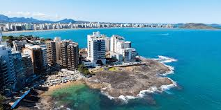
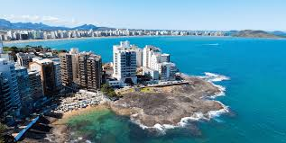
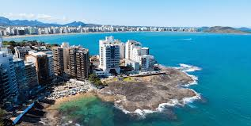

Guarapari, no Espírito Santo, é um renomado destino turístico brasileiro, famoso pelas suas praias, incluindo as de areia monazítica com propriedades terapêuticas, e por ser um centro de esportes aquáticos como o mergulho e passeios de escuna. A cidade oferece uma mistura de atrações, com destaque para a natureza, como a diversidade de ilhas, lagos e o Parque Estadual Paulo César Vinha, além de uma rica história jesuíta, evidenciada por monumentos como o Poço dos Jesuítas e as ruínas da antiga Igreja de Nossa Senhora da Conceição.

Download do texto sobre guarapari: download!